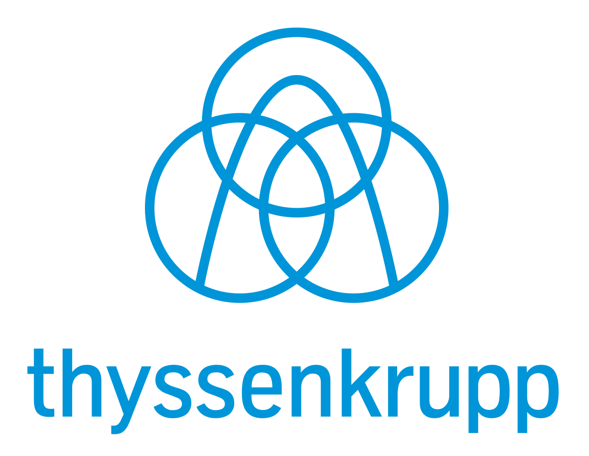

Guia prático · CTF do Brasil
Aprenda a ler qualquer laudo de análise de óleo em 48 horas.
NAS 1638, ISO 4406, TAN, água em ppm, viscosidade. Você recebe o laudo e decide, com número na mão, se troca ou não troca o óleo. Sem esperar o laboratório, o fornecedor ou o colega mais antigo te explicar.
- Do zero ao laudo lido em 48 h
- Sem pré-requisito técnico
- R$ 67 à vista
Acesso imediato após a compra · 7 dias de garantia incondicional
19 anos de experiência em manutenção, fornecimento, microfiltragem e controle da contaminação de óleo industrial.

Air Liquide · ArcelorMittal · Gestamp · Hyundai Mobis · Saint-Gobain · SKF · thyssenkrupp · Sulzer · Motherson · Autoneum · Böllhoff · Plascar · Sabaf · Valgroup
Você já passou por isso?
O laudo chega. Todo mundo olha pra você. E você não tem a resposta.
- O PDF chega por e-mail, você bate o olho em “19/17/14” e “TAN 0,28”, e fecha do mesmo jeito que abriu.
- Fica quieto na reunião de novo, porque não tem argumento pra questionar a troca que o fornecedor sugeriu.
- Troca o óleo “por garantia” — e nunca sabe se jogou fora óleo bom e dinheiro da empresa junto.
- Ou adia a troca pra economizar, e passa a semana com medo de ter deixado a contaminação passar.
- Chega a auditoria ISO 9001 / 14001, perguntam por que o óleo foi trocado, e você não tem como responder com dados.
- Não sabe dizer se o filtro da máquina está realmente segurando partícula ou só enfeitando a linha.
- Já tentou estudar sozinho. Todo material é denso demais, cheio de teoria, e você precisa de resposta rápida.
- No fim do mês, a sensação é sempre a mesma: apagando incêndio, nunca prevenindo.
O que passa na cabeça enquanto o laudo está aberto na tela:
“Será que estou colocando o equipamento em risco sem perceber?”
“Se eu questionar essa troca e a máquina parar, a culpa cai em mim.”
“Todo mundo aqui finge que entende esse laudo. Acho que ninguém sabe de verdade.”
“Eu queria uma resposta rápida. Tudo que estudo é complicado demais.”
Marcou dois ou mais? O problema nunca foi falta de conhecimento técnico. Foi a falta de alguém pra te mostrar o laudo sem enrolação.
A virada
Você não precisa virar engenheiro de lubrificação. Precisa de um atalho confiável.
O Decifra Óleo da CTF do Brasil pega os cinco indicadores que realmente decidem a troca — classe de contaminação, teor de água, acidez, viscosidade e eficiência de filtragem — e te ensina a lê-los na ordem certa, cada um com a faixa de referência pronta e uma regra de decisão simples:
Em 48 horas, sem sair da sua mesa, você sai do “não sei o que isso significa” para “sei o que este laudo está dizendo e o que fazer”.
Direto ao ponto
Vídeos curtos, um indicador por vez. Nada de aula de duas horas.
Feito pra decidir
Cada número vem com faixa de referência e a ação correspondente.
Pra usar no dia seguinte
Planilha e cartão de bolso pra consultar de pé, na frente da máquina.
É pra você se…
- Você recebe laudo de óleo hidráulico ou lubrificante e trava na hora de interpretar.
- Quer parar de depender de fornecedor ou laboratório para uma decisão simples.
- Precisa defender — ou contestar — uma troca de óleo com dado técnico na mão.
Não é pra você se…
- Você procura acreditação de laboratório ou certificado de analista. Não é isso.
- Quer um tratado de tribologia. Aqui é decisão rápida, não pós-graduação.
- Não tem nenhum contato com análise de óleo no trabalho.
O que você recebe
Seis módulos curtos, dois bônus de consulta rápida.
Tudo digital, acesso imediato. Assiste no computador ou no celular, baixa os PDFs e usa offline no chão de fábrica.
-
01
O Mapa do Laudo
Em 12 minutos você entende a anatomia de qualquer laudo: onde olhar primeiro, o que é ruído e os cinco campos que decidem tudo. Nunca mais abrir o PDF sem saber por onde começar.
-
02
NAS 1638 e ISO 4406 na prática
O que significa “18/16/13”, por que a classe subiu e qual número dispara ação na sua máquina. Com tabela de conversão NAS ↔ ISO e alvos por tipo de sistema: hidráulico, engrenagem, servo-válvula.
-
03
TAN (acidez): quando se preocupar
Ler o TAN em mg KOH/g, entender a curva de degradação do óleo e saber a partir de qual variação vale a troca — e quando é só oxidação normal do fluido.
-
04
Água e Viscosidade: a regra dos 3 números
Água em ppm contra o ponto de saturação. Viscosidade em cSt a 40 °C contra o grau ISO VG nominal. Três números, três limites, uma decisão.
-
05
O filtro está funcionando?
Checklist de eficiência de filtragem: como cruzar o beta ratio, a contagem de partículas antes e depois e o intervalo do elemento para saber se o filtro entrega o que promete.
-
06
Falar com autoridade
Script pronto para levar o laudo à chefia, ao fornecedor e à auditoria. Quatro frases que transformam “eu acho que” em “o laudo mostra que”.
Vem junto
Planilha “Semáforo de Decisão”
Você digita os valores do laudo. A planilha devolve verde, amarelo ou vermelho por indicador e uma recomendação única. Excel e Google Sheets.
Cartão de Bolso digital
Uma página. Todas as faixas de referência. Salva no celular e consulta em pé, na frente do equipamento.
Quem está por trás
Isto é o que a nossa equipe técnica já explica, na prática, para cliente.
Com 19 anos de experiência, a CTF do Brasil faz manutenção, fornecimento, microfiltragem e controle da contaminação de óleo industrial para operações que não podem parar. O Decifra Óleo nasceu de uma pergunta que a gente ouve toda semana: “me ensina a ler isso aqui sozinho”.
Da cadeira que você senta, a gente já ouviu:
“Vou ficar quieto de novo na reunião porque não tenho argumento técnico. Preciso parar com isso.”
Baseado nas normas que o seu laudo já cita
- NAS 1638 — classes de contaminação
- ISO 4406 — código de limpeza do fluido
- ASTM D974 / D664 — número de acidez (TAN)
- ISO 3448 — classificação de viscosidade ISO VG
- ISO 16889 — beta ratio e eficiência de filtro
Não inventamos padrão. Ensinamos a ler o que o laboratório já usa.
Antes de decidir
As perguntas que você faria antes de tirar os R$ 67 do bolso.
Não tenho conhecimento técnico. Vou conseguir acompanhar?
Sim. O guia começa do zero, um indicador por vez, com linguagem de chão de fábrica. Se você sabe o que é uma troca de óleo, tem base suficiente para acompanhar.
Isso substitui a análise de laboratório?
Não, e nem deve. O laboratório gera o laudo. O Decifra Óleo te ensina a ler o laudo que ele te manda — para você parar de receber o resultado sem saber o que fazer com ele.
Funciona para qualquer óleo e qualquer máquina?
Funciona para óleo hidráulico e lubrificante industrial, mineral ou sintético, em sistemas hidráulicos, de engrenagem, circulação e servo. Os princípios de leitura — contaminação, água, acidez, viscosidade — valem para praticamente todo laudo físico-químico. Óleos muito específicos (turbina a gás, transformador, grau alimentício) têm particularidades que o guia sinaliza, mas não aprofunda.
E se eu não conseguir aplicar em 48 horas?
As 48 horas são o tempo de estudo, não um prazo correndo contra você. O acesso não expira. Se levar uma semana, tudo bem — o material continua lá, e a planilha resolve na hora quando o próximo laudo chegar.
Como eu recebo?
Link de acesso imediato no e-mail, assim que o pagamento é confirmado. Área digital com vídeos e PDFs para baixar. Pagamento no cartão, Pix ou boleto.
E se não servir para mim?
7 dias de garantia incondicional. Pediu reembolso, devolvemos os R$ 67. Sem formulário, sem “por quê”.
A conta
Quanto custa uma troca de óleo que não precisava acontecer?
Num reservatório de 200 litros, entre óleo novo, filtragem, mão de obra, parada de máquina e descarte, uma troca desnecessária passa fácil de R$ 4.000.
O Decifra Óleo custa R$ 67 e te dá o critério para saber se aquela troca precisava mesmo acontecer — nessa e em todas as próximas.
Valor acessível para você adquirir o conhecimento. Não precisa de aprovação de compra, não precisa abrir requisição.
Acesso completo
Decifra Óleo
- 6 módulos em vídeo curto
- Módulo “Falar com autoridade” + script pronto
- Planilha Semáforo de Decisão (Excel e Sheets)
- Cartão de Bolso digital
- Acesso imediato e vitalício
- 7 dias de garantia incondicional
Pagamento seguro · Cartão, Pix ou boleto
Os bônus (Planilha e Cartão de Bolso) estão disponíveis por tempo limitado!
Da próxima vez que o laudo chegar, a sala inteira vai continuar olhando pra você.
A diferença é que você vai ter a resposta. Segurança para decidir, argumento para defender a decisão, menos óleo bom no descarte e menos máquina parada por contaminação que passou batido. Por R$ 67.
Quero decidir pelo laudo, não pelo achismo